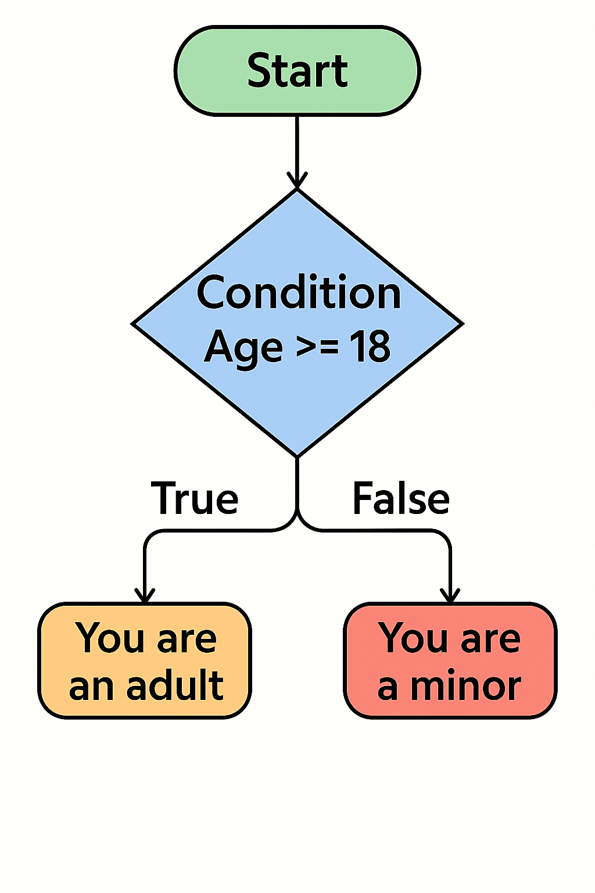
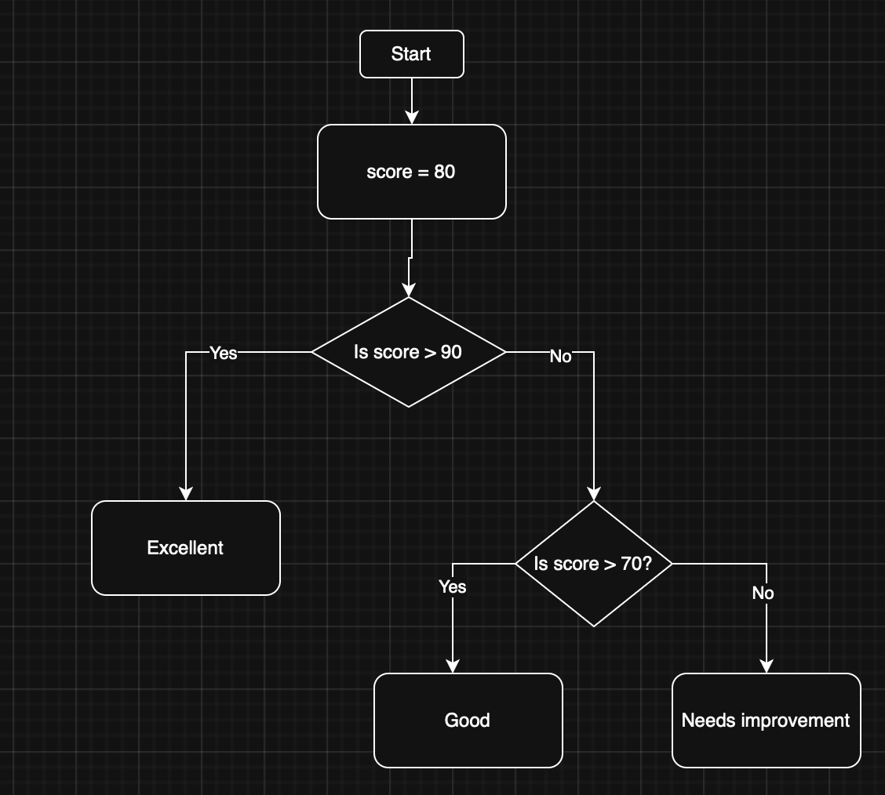

4. Selection - if / else / elif (micro:bit)
4.1 What is Selection?
Selection is a programming concept where the program chooses different paths of execution based on whether a condition is True or False.

All choices are made via a decision based on a condition. A condition is a statement that can be either True or False. It’s used in programming to decide whether a certain block of code should run.
For example, in the above flowchart, the condition is if Age is greater or equal to 18. This evaluates as either true or false and the program will execute accordingly. Notice that Age is a variable that can be any value.
There are other comparisons that can be made:
| Operator | Meaning | Example |
|---|---|---|
| == | Equal to | x == 5 |
| != | Not equal to | x != 5 |
| > | Greater than | x > 5 |
| < | Less than | x < 5 |
| >= | Greater or eq. | x >= 5 |
| <= | Less or equal | x <= 5 |
4.2 Selection - If
In Python, this decision is represented by the keyword if.
Let's look at how this works with the micro:bit:
1 2 3 4 5 6 7 8 9 10 11 12 13 14 15 16 17 18 19 | |
- If
beep_twiceisTrue, the micro:bit will beep twice. - If
beep_thriceisTrue, it will beep three times.
Note
In this example, only the first block of code will run because beep_twice is True and beep_thrice is False.
Try changing the values of beep_twice and beep_thrice to see what happens.
4.3 Selection - Else
What if we want to do something on the False side of the decision? For this, we use the keyword else:
1 2 3 4 5 6 7 8 9 10 11 12 13 14 15 16 17 | |
- If
beep_twiceisTrue, the micro:bit shows a happy face twice. - Otherwise, it shows a heart three times.
Only one set of code will run, depending on the condition.
Another example:
1 2 3 4 5 6 7 8 9 10 | |
Here, the micro:bit will show "minor" because age is less than 18.
What value would age need to be to show "Adult"?
4.4 Class Activity
Write a program that checks if a number is positive or negative. If the number is positive, it should display "Positive". If the number is negative, it should display "Negative". Try changing the number to see different results.
4.5 Selection - Else If (elif)

Sometimes, we need to check multiple conditions. We can use elif (else if):
1 2 3 4 5 6 7 8 9 10 11 12 13 | |
- If
scoreis above 90, it shows "Excellent". - If
scoreis above 70 (but not above 90), it shows "Good". - Otherwise, it shows "Needs improvement".
Let's apply elif to a another example:
1 2 3 4 5 6 7 8 9 10 11 12 13 | |
Which message will the micro:bit display? Try changing the value of age to see different results.
4.6 Class Activity
Write a program that checks if a number is positive, negative, or zero. If the number is positive, it should display "Positive". If the number is negative, it should display "Negative". If the number is zero, it should display "Zero". Try changing the number to see different results.
4.7 Inputs
Micro:bit can also take input from a keyboard. We can do this using the input() function.
1 2 3 4 5 6 | |
In the above, we are storing the user's input in a variable called name. We then create a greeting message by concatenating "Hello " with the user's name. Finally, we print the greeting to the console and scroll it on the micro:bit display.
Note
The input() function is a built-in function in Python that allows you to take input from the user. When the program reaches the input() function, it will pause and wait for the user to enter something. Once the user presses Enter, the input is stored in the variable name. Of course, the variable used to store the result of input() can be called whatever name you would like.
Let's update the Age program from above to incorporate user input:
1 2 3 4 5 6 7 8 9 10 11 12 13 | |
Now all of a sudden our program is much more interactive!
Note
Notice that we used int(input(...)) to convert the user's input from a string to an integer. This is necessary because the input() function returns a string, and we need to compare it to numbers in our conditions. For more inforamation on this see https://www.geeksforgeeks.org/python/convert-string-to-integer-in-python/ or ask your friendly LLM "can you explain Python datatypes and casting to me?"
4.8 Using Loops with Buttons
Loops are often used to check inputs like buttons.
1 2 3 4 5 6 7 8 9 | |
What happens?
- The program constantly checks button A
- Shows different images depending on input
4.9 Class Activity
Write a program that takes an input name.
If name is Mohammed print and display "Teach me IoT".
If name is Lewis print and display "Teach me web".
If name is Anh print and display "Don't teach me Cyber".
Otherwise, for any other name print and display "Hello [name]"